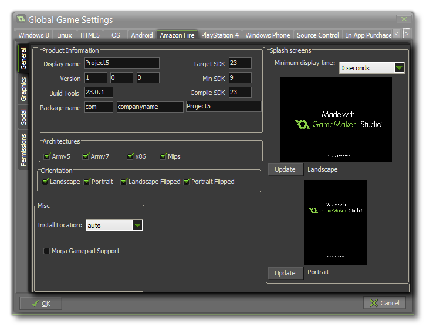
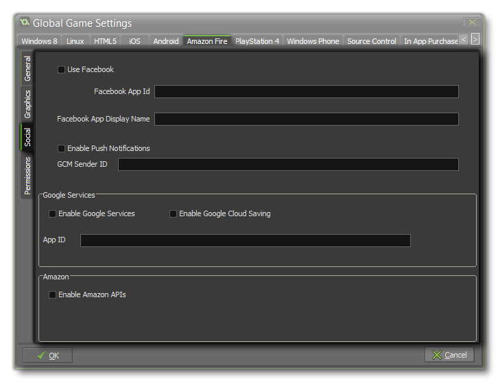

IMPORTANT! This tab will only be visible if you have signed up for a promotional trial of the Amazon Fire module and do not have the Android module. If you do have Android, then you should look at the page Android Global Game Settings instead.
The Amazon Fire tab is split into various separate sub-tabs (accessible on the left of the window) to make changing and updating the information for your game clearer and less complicated. These tabs are explained in the following sections. The basic setup for the Amazon fire is similar to that used for Android, so make sure sure that you have set up the Android Preferences correctly before using this target.
 The first thing to
do is fill in the details about your game, including its Display
Name, its Package Name and the Version info. The
package name can only be made up of letters from A-Z and numbers
0-9, with no symbols or other special characters at all, nor should
it have uppercase characters. It should follow the format
“com.domain.myapp”.
Here you can also set the build tools version to use, along
with the SDK values to use (minimum SDK version, Target
SDK version and the Compile SDK version). In general you
will want to leave these at their default values, but if your game
targets a specific Android version then you can set the build tools
and SDK values to that which you require here.
To the right of the page, you can add a splash screen to your APK,
for both landscape and portrait modes, which will be shown while
the game loads on the device. This screen should be a 24bit PNG
file, and is recommended to be the same size as the first room (or
view) in your game. If you require that the splash screen be shown
for a specific time then you can also set it here from 0 to 10
seconds (the default time of 0 means that it will only show for the
duration of the asset loading).
On this page you can also set the following options for your final
APK file:
- Architectures - This is the CPU type that your game will support. The most common ones are chosen by default (99% of all devices use these), but you can choose those that you think appropriate. Bear in mind that each one will add about 1MB to the final apk size, don't go ticking them all unless this is not a problem!
- Orientation - Here you can choose to lock the game to a specific orientation by checking either landscape, portrait, landscape-flipped or portrait-flipped. Note that if you have selected Portrait and PortraitFlipped, then this is handled as sensorPortrait, but not all devices will allow the PortraitFlipped orientation in this mode.
- Misc - This section permits you to add extra support for certain features:
- you can set the Install Location for your game. This can either be set to auto, in which case the game will be installed to the location chosen by the user on their device, or it can be set to Prefer External which will always try to install the game to the external storage of the device.
- you can add support for Moga Controllers for your game here. Note that all Moga functionality is accessed via an extension, and when you first check the Use Moga box you will be prompted to download the Moga extension from the Marketplace and then add it into your project.
The graphics tab
has three sections to it - Options, Icons and
Texture Pages. The first of these controls the display
options for your game, with the first one being the Interpolate
colours Between Pixels flag. This turns on interpolation, which
basically "smooths" pixels, so for crisp pixel graphics, it should
be off, but if you have nice alpha blends and smoothed edge
graphics it is better left on.
Next, you can set the Screen colour Depth to either
16bit or 24bit. This will affect the compatibility
with some older devices if it is set to 24bit, and will also
increase the ashmem that is needed (this is the shared
memory on Android devices).
The next here is the Device Support for your game. You can
choose to support any device, or only those that have a GPU.
Basically, if your game has any advanced drawing functions like
alpha blending, additive blending, surfaces, etc... you should
limit it to those devices that have a GPU otherwise you run the
risk of getting negative comments and poor rating for your game due
to graphical errors or crashes on older devices.
Finally there is the option for scaling to the device screen. Here
you can choose to maintain aspect ratio (so a 4:3 room, for
example, will be "letter boxed" on a 16:9) or to scale fully
(stretching the image to fit the full screen).
WARNING! Switching off the application surface in your code will disable all the scaling options set in the Global Game Settings until it has been switched back on again. See The Application Surface for further details.
After these options there is the section for setting the size of
the Texture Page. The default (and most compatible) size is
1024x1024, but you can choose from anywhere between 256x256 up to
2048x2048. There is also a button marked View which will
generate the texture pages for this platform and then open a window
so that you can see how they look. This can be very useful if you
wish to see how the texture pages are structured and to prevent
having texture pages larger (or smaller) than necessary.
On the right of the page you can set the game icons. These are used
in various situations on the Store and in your game, and should be
created as 24bit PNG files of the appropriate sizes given.
NOTE: Be aware that the larger the size of the texture page, the less compatible your game will be.
 This tab permits
you to enable social functions for your Android game with either
Amazon GameCircle, Google Play, or Facebook as
well as activate Push Notifications.
If you require the Facebook functions, you need to click the
"Use Facebook" checkbox and then supply the Facebook App
ID and Facebook App Display Name. Note that all Facebook
functionality is accessed via an extension, and when you first
check the Use Facebook box you will be prompted to download the
Facebook extension from the Marketplace and then import it into
your project.
In order for your game to use Push Notifications they must
be enabled here first otherwise they will not work. Local
notifications on Android do not require the "GCM Sender
ID", but you must add it should you wish to create remote
notifications.
If you want to enable achievements and leader boards from the
Google, then you need to check the appropriate check box. Once you
have ticked one of the services, you will be prompted to download
and install the corresponding extension from the Marketplace and
install it in your project, and then code the functionality into
your game using the
Achievements and Leader boards functions. Note that you will
need to add your App Id from Google Play into this tab for
the services to work (this can be found from your Google Play
Developers dashboard).
If you are using any Amazon Services, you need to tick the
"Enable Amazon API's" check box. Once you have ticked this, you
will be prompted to download and install the corresponding
extension from the Marketplace. The Amazon API does not hook into
the built in leader board functions (like the Google APIs do) but
instead has all the functions included as part of the
extension.
From this tab you can change some of the permissions that your game may request within the Android Manifest. GameMaker: Studio allocate permissions automatically as required, however you may find you require a permission for your game that we haven't assigned in which case tick the requisite permission box on the tab. The list below outlines those that are available:
- WRITE_EXTERNAL_STORAGE - Will permit your game to write to external storage.
- READ_PHONE_STATE - Allow read only access to the phone state.
- ACCESS_NETWORK_STATE - Permit your game to access information about networks.
- INTERNET - Permit your game to open network sockets.
- BLUETOOTH - Will permit your game to connect to paired Bluetooth devices.
- RECORD AUDIO - Will permit your game to record audio input from the microphone.
NOTE: If you are not sure that you need these, you should probably just leave them un-checked by default and let GameMaker: Studio deal with the permissions for your game.